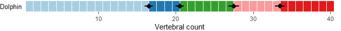

MorphoRegions is an R package built to computationally identify regions (morphological, functional, etc.) in serially homologous structures such as, but not limited to, the vertebrate backbone. Regions are modeled as segmented linear regressions with each segment corresponding to a region and region boundaries (or breakpoints) corresponding to changes along the serially homologous structure. The optimal number of regions and their breakpoint positions are identified using maximum-likelihood methods without a priori assumptions.
This package was first presented in Gillet et al. (2024) and is an updated version of the regions R package from Jones et al. (2018) with improved computational methods and expanded fitting and plotting options.
Installing MorphoRegions
You can install the released version of MorphoRegions from CRAN with:
install.packages("MorphoRegions")Or the development version from GitHub with:
# install.packages("remotes")
remotes::install_github("AaGillet/MorphoRegions")Example
The following example illustrates the basic steps to prepare the data, fit regionalization models, select the best model, and plot the results. See vignette("MorphoRegions") or the MorphoRegions website for a detailed guide of the package and its functionalities.
Preparing the data
Data should be provided as a dataframe where each row is an element of the serially homologous structure (e.g., a vertebra). One column should contain positional information of each element (e.g., vertebral number) and other columns should contain variables that will be used to calculate regions (e.g., morphological measurements). The dolphin dataset contains vertebral measurements of a dolphin with the positional information (vertebral number) in the first column.
data("dolphin")| Vertebra | Lc | Wc | Hc | Hnp | Wnp | Inp | Ha | Wa | Lm | Wm | Hm | Hch | Wch | Ltp | Wtp | Itp | |
|---|---|---|---|---|---|---|---|---|---|---|---|---|---|---|---|---|---|
| 8 | 8 | 1.33 | 3.37 | 2.02 | 2.85 | 1.17 | 2.01 | 1.72 | 1.48 | 0.00 | 0.00 | 0.0 | 0 | 0 | 1.71 | 1.67 | 1.57 |
| 9 | 9 | 1.46 | 3.67 | 2.10 | 3.20 | 1.63 | 2.01 | 1.44 | 1.65 | 0.00 | 0.00 | 0.0 | 0 | 0 | 1.51 | 1.61 | 1.57 |
| 10 | 10 | 1.57 | 3.62 | 2.26 | 3.13 | 1.71 | 2.01 | 1.42 | 2.18 | 0.00 | 0.00 | 0.0 | 0 | 0 | 1.06 | 1.90 | 1.57 |
| 11 | 11 | 1.71 | 3.75 | 2.24 | 3.07 | 1.71 | 2.01 | 1.38 | 1.25 | 0.56 | 0.38 | 1.7 | 0 | 0 | 1.03 | 1.91 | 1.66 |
| 12 | 12 | 1.74 | 3.72 | 2.28 | 2.66 | 1.96 | 1.99 | 1.30 | 1.50 | 1.45 | 1.09 | 2.0 | 0 | 0 | 0.60 | 1.71 | 1.57 |
| 13 | 13 | 1.82 | 3.92 | 2.28 | 2.61 | 1.74 | 1.88 | 1.29 | 1.74 | 1.86 | 1.12 | 2.0 | 0 | 0 | 0.37 | 1.44 | 1.57 |
Prior to analysis, data must be processed into an object usable by regions using process_measurements(). The pos argument is used to specify the name or index of the column containing positional information and the fillNA argument allows to fill missing values in the dataset (up to two successive elements).
dolphin_data <- process_measurements(dolphin, pos = 1)
class(dolphin_data)
#> [1] "regions_data"Data are then ordinated using a Principal Coordinates Analysis (PCO) to reduce dimensionality and allow the combination of a variety of data types. The number of PCOs to retain for analyses can be selected using PCOselect() (see the vignette for different methods of PCO axes selection).
Fitting regressions and selecting the best model
The calcregions function allows fitting all possible combinations of segmented linear regressions from 1 region (no breakpoint) to the number of regions specified in the noregions argument. In this example, up to 5 regions (4 breakpoints) will be fitted along the backbone, however, there is no limit for this value and it is possible to fit as many regions as you would like. For this example, regions will be fitted with a minimum of 3 vertebrae per region (minvert = 3) and using a continuous fit (cont = TRUE) (see vignette("MorphoRegions") or MorphoRegions website for details about fitting options).
regionresults <- calcregions(dolphin_pco, scores = PCOs, noregions = 5,
minvert = 3, cont = TRUE,
exhaus = TRUE, verbose = FALSE)
regionresults
#> A `regions_results` object
#> - number of PCOs used: 2
#> - number of regions: 1, 2, 3, 4, 5
#> - model type: continuous
#> - min vertebrae per region: 3
#> - total models saved: 28810
#> Use `summary()` to examine summaries of the fitting process.For each given number of regions, the best fit is selected by minimizing the residual sum of squares (sumRSS):
models <- modelselect(regionresults)
models
#> Regions BP 1 BP 2 BP 3 BP 4 sumRSS RSS.1 RSS.2
#> 1 . . . . 1.898 1.456 0.441
#> 2 26 . . . 0.413 0.105 0.308
#> 3 23 29 . . 0.147 0.092 0.055
#> 4 23 30 40 . 0.073 0.034 0.040
#> 5 23 27 34 40 0.046 0.026 0.020The best overall model (best number of regions) is then select by ordering models from the best fit (top row) to the worst fit (last row) using either the AICc or BIC criterion:
supp <- modelsupport(models)
supp
#> - Model support (AICc)
#> Regions BP 1 BP 2 BP 3 BP 4 sumRSS AICc deltaAIC model_lik Ak_weight
#> 5 23 27 34 40 0.046 -556.036 0.000 1 1
#> 4 23 30 40 . 0.073 -528.096 27.940 0 0
#> 3 23 29 . . 0.147 -480.952 75.084 0 0
#> 2 26 . . . 0.413 -405.787 150.250 0 0
#> 1 . . . . 1.898 -290.769 265.267 0 0
#> Region score: 5
#>
#> - Model support (BIC)
#> Regions BP 1 BP 2 BP 3 BP 4 sumRSS BIC deltaBIC model_lik BIC_weight
#> 5 23 27 34 40 0.046 -526.559 0.000 1 1
#> 4 23 30 40 . 0.073 -502.645 23.914 0 0
#> 3 23 29 . . 0.147 -460.321 66.238 0 0
#> 2 26 . . . 0.413 -390.668 135.891 0 0
#> 1 . . . . 1.898 -281.774 244.784 0 0
#> Region score: 5Here, for both criteria, the best model is the 5 regions models with breakpoints at vertebrae 23, 27, 34, and 40. The breakpoint value corresponds to the last vertebra included in the region, so the first region here is made of vertebrae 8 to 23 included and the second region is made of vertebrae 24 to 27. The function also returns the region score, a continuous value reflecting the level of regionalization while accounting for uncertainty in the best number of regions (see vignette("MorphoRegions") or MorphoRegions website for more details).
Plotting results
Results of the best model (or any other model) can be visualized either as a scatter plot or as a vertebral map.
The scatter plot shows the PCO score (here for PCO 1 and 2) of each vertebra along the backbone (gray dots) and the segmented linear regressions (cyan line) of the model to plot. Breakpoints are showed by dotted orange lines.
plotsegreg(dolphin_pco, scores = 1:2, modelsupport = supp,
criterion = "bic", model = 1)In the vertebral map plot, each vertebra is represented by a rectangle color-coded according to the region to which it belongs. Vertebrae not included in the analysis (here vertebrae 1 to 7) are represented by gray rectangles and can be removed using dropNA = TRUE.
plotvertmap(dolphin_pco, name = "Dolphin", modelsupport = supp,
criterion = "bic", model = 1)
plotvertmap(dolphin_pco, name = "Dolphin", modelsupport = supp,
criterion = "bic", model = 1, dropNA = TRUE)The variability around breakpoint positions can be calculated using the calcBPvar function and then displayed on the vertebral map. The weighted average position of each breakpoint is shown by the black dot and the weighted variance is illustrated by the horizontal black bar.
bpvar <- calcBPvar(regionresults, noregions = 5,
pct = 0.1, criterion = "bic")
plotvertmap(dolphin_pco, name = "Dolphin",
dropNA= TRUE, bpvar = bpvar)